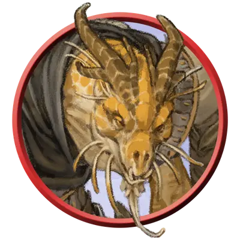

Капитан разведчиков
Scout Captain
Средний или Маленький Гуманоид, Нейтральный

Класс Защиты 15 Инициатива +5 (15)
Хиты 66 (12к8 + 12)
Скорость 30 футов, Лазания 30 футов
| мод | спас | ||
|---|---|---|---|
| СИЛ | 11 | +0 | +0 |
| ЛОВ | 16 | +3 | +5 |
| ТЕЛ | 12 | +1 | +1 |
| мод | спас | ||
|---|---|---|---|
| ИНТ | 14 | +2 | +4 |
| МДР | 15 | +2 | +2 |
| ХАР | 11 | +0 | +0 |
Чувства пассивное Восприятие 16
Языки Общий
Опасность 3 (700 опыта; БВ +2)
Действия
Мультиатака. Капитан совершает две атаки Коротким мечом или Длинным луком в любой комбинации.
Короткий меч. Бросок рукопашной атаки: +5, досягаемость 5 фт. Попадание: 6 (1к6 + 3) Колющего урона, плюс 10 (3к6) Колющего урона, если атака совершалась с Преимуществом.
Длинный лук. Бросок дальнобойной атаки: +5, дистанция 150/600 фт. Попадание: 7 (1к8 + 3) Колющего урона, плюс 10 (3к6) Колющего урона, если атака совершалась с Преимуществом.
Бонусные действия
Прицеливание. Капитан получает Преимущество на следующий бросок атаки, который совершит в текущем ходу.
Реакции
Невероятное уклонение. Условие: По капитану попадает бросок атаки. Эффект: Капитан ополовинивает полученный от этой атаки урон (округляя вниз).
Бонус мастерства +2
Среда обитания Любая
Сокровища Личные, Инструментальные
Разведчики
Дозорные и странники
Разведчики — это воители диких земель, обученные охоте и выслеживанию. Они могут быть первопроходцами или звероловами, а могут исполнять и более ратные роли: метких лучников, охотников за головами либо конных дозорных.
Капитаны разведчиков — это бывалые землепроходцы и меткие стрелки. Они могут вести за собой отряды других разведчиков или по одиночке пропадать в диких землях на долгие месяцы кряду.